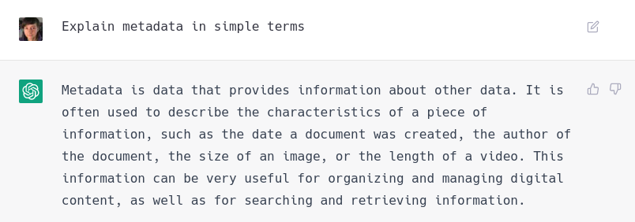

Hello! üëã
Welcome to a talk by the Data Discoverability team at Astun Technology
What is metadata?

Pixnio CCO
Why is it important?
So chatGPT knows that metadata is important for making data management more effective, secure, and efficient
Adobe Stock Photo
But it also...
Reduces risk and cost
Adds value, and encourages innovation
and helps others understand the data
üëâ Serious example
The Internet
However...
Alex Proimos, Flickr CC BY-NC 2.0
Some jargon
The Internet
eXtensible Markup Language
The most common format in which metadata is provided
Both a language and a file format
Takes the form of elements, surrounded by start and end tags that describe what the element is and what type of thing it is
üëâ XML metadata
Redbubble
XML rules and validity
Rules on what should be in a metadata record are defined by schemas
A record can re-use elements from many different schemas using namespaces
A valid record must be both well-formed and schema-valid
üëâ That record again
Redbubble
Schemas, Standards and Profiles
Schema: specifies the structure of the metadata, the elements, and the controlled vocabularies used
Standard: a schema that has been developed and maintained by a standards organisation
Profile: an extension to a standard, or an implementation of it in software, or both
ISO Standards and Gemini
The core standard for Geospatial metadata is ISO19115

ISO19139 is the implementation of ISO19115 in XML

GEMINI is an extension to ISO19139 for UK geospatial metadata

üëâ Gemini Online
What about INSPIRE?
Yes, you still have to do it
#1 Identify key environmental datasets
#2 Provide metadata in Gemini format
#3 Make data available via web services
#4 Publish to data.gov.uk
Unsplash CC0 1.0
The intersection with Linked Data
URIs
Dublin Core/DCAT
RDF/Triples
Ontologies
ü§î Are metadata catalogs just for spatial data?
No! Other uses include...
Non-spatial datasets...
Detailed workflow recording...
GDPR records...
James Case, Flickr CC0 1.0
What is Q-FAIR all about?
Quality
- is just a hyphen
Findable
Accessible
Interoperable
Reusable
Copyright Eoin Sharkey
Where to start?
Get as much buy-in as possible
Tools such as Data Maturity Models help assess your current level
Frame it in terms of getting the best value out of your assets
But take it one step at a time!
Unsplash CC0 1.0
üö∏ Novice Level
Keep it simple
Stick to a structure
Metadata in a spreadsheet is better than no metadata
Choose a few key datasets to start with
elPadawan, Flickr CC BY-SA 2.0
üí™ Next Level
Don't reinvent the wheel
Adopt open solutions that aid sharing and discovery
Always be Q-FAIR
Don't let perfect be the enemy of good
wiredforlego, Flickr CC BY-SA 2.0
Any questions?
U.S Embassy and Consulates in Canada, Flickr Public Domain Mark 1.0
üôè Thanks for attending!
We'll be sharing the recording with you all shortly
US Airforce